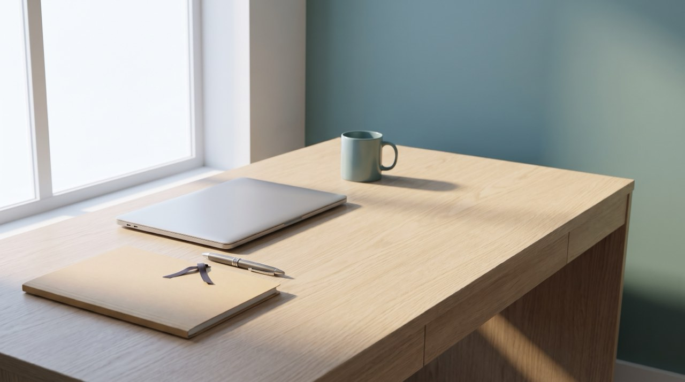
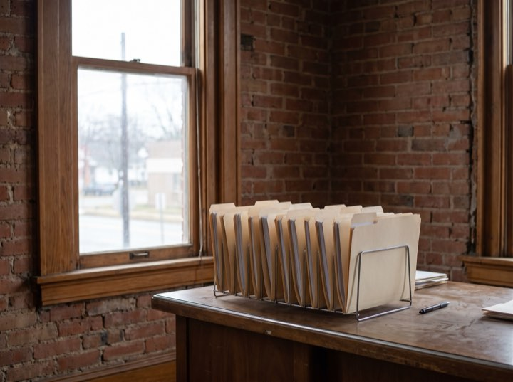
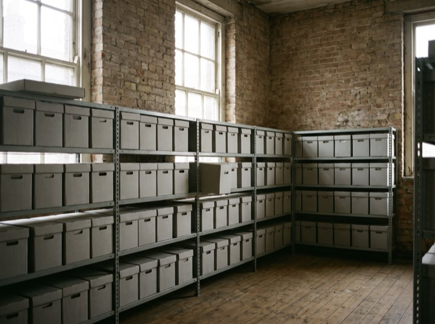

01
Business tax & compliance
Federal, state and local returns, filed early rather than extended. Extensions are a symptom, not a service.
Business advisory & tax
Business accounting, tax and advisory for owner-managed companies. Documents go into an encrypted portal with a checklist that tracks itself, so nobody is ever searching an inbox for a K-1 in March.

Services
We work with owner-managed businesses between roughly $500k and $20M in revenue. Below that we'll point you somewhere better suited.
Federal, state and local returns, filed early rather than extended. Extensions are a symptom, not a service.
Books closed by the tenth, with a short written commentary. You should not be finding out about last quarter in April.
Entity structure, owner compensation, cash-flow forecasting and the tax planning that only works if it happens before December.
Included for owners of business clients. Your company and personal position are the same problem and should be looked at together.
Results
Process
Easier than people think, and best done between May and August rather than in January.
Thirty minutes. What your business does, what's currently painful, and whether we're the right size for each other.
We look at two years of returns and your current books, then propose a fixed monthly fee. No hourly billing, ever.
We request the records from your current accountant, through the portal, so you never have to make that phone call yourself.
Books monthly, a proper conversation quarterly, tax planning in the autumn while it can still change the outcome.
The intake
Documents come in through the portal, get scanned once, and go into a file with your name on it. Never into an inbox.


Then this is the right month to talk. Everything worth fixing has to be built between May and August. By January it's too late to change anything.
Fixed monthly fees. Business clients from roughly $500k revenue. Free discovery calls.